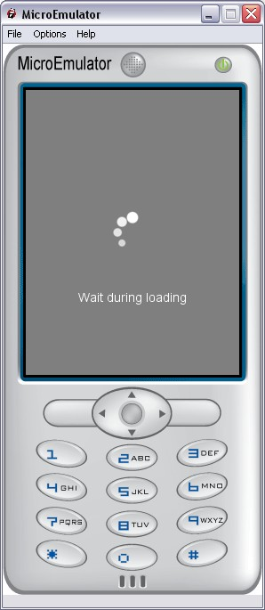

Loader prototype

Gray the full screen and display a message and a loading animation.
Note:
To generate a sprite from a GIF, use ImageMagik convert tool:
convert myAnim.gif +append icon.png
Data fields
- MFString message - Loader message (can be empty to prevent message display)
Style fields
- MFString style - Path to the CSS node associated to Loader proto
- MFString images - Sprite image for the loading animation (can be empty to prevent icon display)
- SFVec2f screenSize - Size of the screen where the application is displayed
- SFVec2f textScale - Use for scaling text if necessary (phone with small fonts)
Warning:
Define style is required (we can use the default style - see
Style node).
Exposed Fields
- SFInt32 exposedField display - Set to 0 to display the loader, -1 to hide it.
LoaderMini